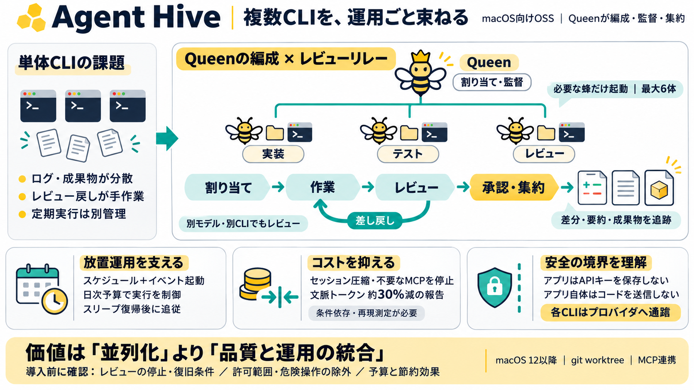

Claude Code -- Sandbox Analysis Report | Agent Safehouse
[INFERRED] All authentication details below are inferred from CHANGELOG and public documentation. ### 3.1 Credential St…

Agent Hive 🐝 / 複数CLIを群れで運用
macOS上で複数のコードエージェントCLIを同時に動かし、割り振り・レビュー・集約まで「運用」ごと束ねるOSSです。リレー（レビュー戻し）とスケジュールで、放置運用にも寄せます。
単体CLIだと詰まる
単体のエージェントCLIは、指示した作業は進む一方で、並列実行・品質確認・ログ/成果物の追跡が散らかりがちです。さらに、放置している間の定期実行（cron的運用）も別管理になりやすくなります。
蜂の群れ運用
Queen（統括）が「どの蜂に何をさせるか」を決め、必要な隊列だけ起動します。蜂は独立フォルダとチャットを持ちつつ、結果はQueen側で集約・要約されます。
二層の協調
協調は主に「Queenの割り当て」と「リレー（レビュー戻しループ）」の二つで成り立ちます。レビュー担当も別モデル/別CLIにできるため、単一ツール環境の制約を緩めます。
作業の流れ（概略）
Queenが作業を進め、レビューで差分を確認し、承認されるまでループします。結果は集約され、同じリポジトリ内で変更の追跡がしやすくなります。
放置運用を現実に
スケジュール実行とイベントトリガーで、日次予算の範囲内に抑えながら定期作業を回せます。macOSスリープ中の取りこぼしも、復帰後に同日で追いかける設計です。
コスト爆発を抑える
マルチエージェントは高コストになりやすい前提で、セッション圧縮・新セッション開始・使わないMCPを起動しないなどの方針が挙げられています。さらに測定例として、文脈トークンが約30%少なかったという主張があります。
送らない・保持しない
アプリはAPIキーを保存せず、ネットワークへコードを送らない方針が強調されています。モデルへ処理を投げるのは各CLI（Claude Code等）側で、通常どおりプロバイダへ通信します。
「並列実行」以上
Agent Hiveの中心価値は、エージェントを起動するだけでなく、監督・レビュー・成果物管理・コスト制御をワークフローに組み込む点です。特にリレー形式の承認ループが、品質を上げる方向に働きます。
確認ポイント（限界）
README要約だけでは、レビュー誤判定時の復旧、stuck判定、最大ラウンド後の収束戦略などの詳細が読み取りづらいと指摘されています。安全性も概念レベルに見えるため、実運用ではガードレール（許可範囲・対象フォルダ等）の確認が重要です。
技術的な前提
git worktreeを活用して並列ステップの分岐を扱う前提が示されています。さらにMCPを使った機能連携を前提にしており、拡張可能性を感じられる構成です。
導入判断の要点
Agent Hiveは、複数エージェントを散らさず回し、差分や成果物を追えることに価値があります。導入前に、レビュー回数・スケジュール頻度・信頼できるリポジトリ範囲・MCP利用有無を整理し、コストとリスクのボトルネックを確認するのが近道です。
[INFERRED] All authentication details below are inferred from CHANGELOG and public documentation. ### 3.1 Credential St…
As of v2.1.178, compaction also honors the fallback chain — if the primary model is overloaded or unavailable mid-compac…
``` # Build an agent using Claude Code claude> /hive # Test your agent claude> /hive-debugger # (at separate terminal) L…
| Aspect | Claude Code | Hermes Agent | --- | Models | Claude only | 200+ via OpenRouter, OpenAI, Anthropic, HuggingFace…
## Capabilities | Feature | Supported | --- | | Chat | Yes | | Agent mode | Yes | | Multi-file edit | Yes | | Autocomp…